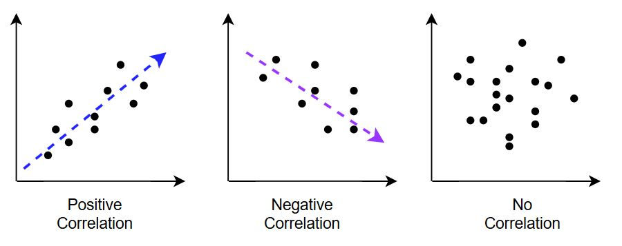
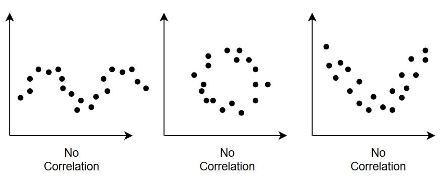

Chapter 2: Bringing the right equipment to start your data adventure#
Learning analytics and machine learning is a adventure through an ever-growing field. As of writing (2023) the past few years have seen many interesting applications such as chatGPT, Stable Diffusion, Copilot and more. As you get going on your data journey there will likely be new advancements and technologies. Our goal is therefore to teach you the essence of analytics and machine learning as most cutting-edge techniques also start from a common ancestor.
The focus of this chapter is introducing you to the core concepts of data analytics and the case study we will be using throughout this course. \(\,\!\)
Our case: Ada’s travel agency#
Ada Turing Travelogue, or as everyone calls her, Ada just started working part time at her parents travel agency. She has a keen understanding and interest of everything related to applied computer science ranging from server & system management to full stack software development. Through database foundations she already understands how to query data and programming 1 and 2 covered the essentials about the Python programming language. Recently she has just decided to start learning about data analytics & machine learning as well.
She uses her skills to connect to the travel agency’s database where she finds many, normalized, tables. Ada recalls what she learnt in database foundations and performs all the correct joins. Afterwards she saves the data in the data/ folder.
Note
For the sake of convenience we will mostly be working with .csv files in this course. In practice the analytics workflow also involves connecting to databases, querying data with SQL and more.
She finds the following dataset:
SalesID: A unique identifier for each sale.
Age: The age of the customer.
Country: The country where the customer is located.
Membership_Status: “standard”, “silver”, “gold” the loyalty program level.
Previous_Purchases: Number of trips purchased in the past.
Package_Type: The type of travel package purchased: “Adventure”, “Relaxation”, “Cultural”.
Destination: The destination of the travel package.
Cost: The cost of the travel package for the customer.
Margin: The profit the travel agency made from the reservation. This is always lower than the cost.
Guests: The amount of guests present.
Stay_length: The length of the holiday.
Travel_month: The month (1-12) the customer is traveling.
Months_before_travel: The amount of months before the eventual booking date the person booked.
Earlybird_discount: Does the customer have an early bird discount?
Rating: The customer’s rating of the trip, on a scale (e.g., 1-10).
Question 1: What data types exist in her data?
Ada has a bunch of different tables and columns how would you classify them?
Numeric and categorical data#
This distinction is different than the ones you’ve likely encountered so far. In other courses the distinctions you made between data types where likely primitive data types such as Integer, floats, boolean variables, strings and more. In analytics we’re interested in organizing our data in a different way, namely numeric versus categorical data.
Numeric Data: Numeric data represents values that can be measured or counted. It involves numerical quantities or amounts. There are two types of numeric data: continuous and discrete.
Continuous data can take any value within a specific range, like temperature or weight.
Discrete data consists of specific separate values, such as the number of siblings or cars in a parking lot.
Categorical data refers to data that represents different categories or groups. It involves qualitative characteristics that are not measured on a numerical scale. Just like with categorical data there are two types:
Binary: true/ false, for example employed vs unemployed.
Ordinal: Categories where there is a clear order. For example, level of education.
Just like in programming the data type tells us what type of operations (in this case analysis) are possible. For example "yellow" / "blue" would not be a valid operation in programming languages like Python. A similar idea exists in analytics not all data analysis, some of the techniques we will cover will only be valid for categorical or numeric data.
Note
In practice ordinal (categorical) and discrete (numeric) data are quite similar.
Let’s see if we can help Ada decide which questions columns are categorical and numeric.
To Summarize:#
When working with data, it’s important to distinguish between numerical and categorical data:
Numerical Data: Represents measurable quantities (e.g., age, height, income). These can be further divided into:
Continuous: Can take any value within a range (e.g., weight in kg).
Discrete: Countable values (e.g., number of students in a class).
Categorical Data: Represents groups or categories (e.g., gender, country, product type). These can be:
Ordinal: Categories with a meaningful order (e.g., small, medium, large).
Nominal: Categories with no inherent order (e.g., colors, brands).
Understanding the type of data is crucial for selecting the right analytical techniques. We will return to this concept again and again as we move through this course.
What can we do with data?#
Now that Ada has her data ready to go and we know what types of data there is, it’s time to start our journey. The elephant in the room remains: where are we going? Put otherwise, what can we do with data?
Think about what you can do with data.
Pause for a minute to think what types of things you can do with data. Discuss with your neighbor, friends, or family.
Come up with some examples specifically for Ada.
Generally speaking in analytics you are goal-oriented. There is a specific goal that was formulated and you want to use data to aid yourself in solving the problem. For the travel agency specifically this could be finding out how to make more profit. Methodologies exist such as a strengths, weaknesses, opportunities and threats (SWOT) analysis that can be used to enumerate a list of objectives. Data can be find or act on SWOT-items.
Ada’s parents run the day-to-day of the business and came up with a few concrete questions:
What package type are we selling the most of?
Which package type has the highest cost?
Which package type has the highest margin?
Can we use historical data to pick our price instead of doing it manually?
Understanding our data#
Univariate versus Multivariate Analysis:#
As we try to understand the data we have, we can divide the analysis into two categories:
Univariate: one variable at a time
Multivariate: more than one variable at a time
Univariate analysis focuses on understanding a single variable at a time. This might involve calculating descriptive statistics like the mean, median, and standard deviation, or creating visualizations like histograms and box plots to explore the distribution of the data. We’ll see look at each of these in more detail as we go.
In contrast, multivariate analysis explores relationships between multiple variables simultaneously. This can include techniques like correlation analysis to measure the strength and direction of relationships, regression analysis to model how one variable depends on others, and dimensionality reduction to identify underlying patterns in complex datasets.
The choice between univariate and multivariate analysis depends on the research question and the nature of the data. Most data science projects will rely on both types to develop a complete picture of the data we have to work with.
Univariate Analysis#
Summary statistics#
Before Ada dives into answering the complex questions her parents have given her she tries to get a general understanding of the dataset. There are two general ways to do this:
Summarizing the data.
Plotting the data.
We will cover both. Plots are a great way to convey information to a non-technical audience. Summary statistics on the other hand let you convey a lot of information about your dataset concisely. We will start by looking at summary statistics as a way to summarize certain variables (univariate analysis) or even the relationship between variables (bivariate analysis).
In short, we want to start off by taking our entire dataset and representing it by a few values that carry most of the interesting information.
Summarizing location#
Summarizing data
Ada would want to summarize the age and the country variables. How would you approach this?
Note
Calculating the mean The mean is calculated as
We can read this as the mean is equal to the sum of all data points divided by the number of data points.
Intermezzo: A little bit of notation#
In this course we will use some mathematical notation. We chose to do this for two reasons, it’s a very concise way to express formulas and its something you will come across in documentation, presentations and more. We will assume zero prior knowledge of notation in this course. We will introduce what is necessary in a piecemeal fashion.
Typically in statistics we will use a capital letter to indicate we’re talking about a variable. In this textbook if you see \(X\) (Upper-case \(X\)) this refers to a variable while \(x\) (Lower-case \(x\)) refers to a specific value. For those interested, a very loose analogy with object oriented programming would be that \(X\) is a class and \(x\) is an instance of that class.
Lower-case \(n\) is typically used to indicate an index, so \(x_{n}\) should be read as the n-th value of \(X\). Large letter \(N\) is used to indicate the amount of data points.
The mean, also known as the average, is typically written as \(\bar{X}\) which is pronounced as X bar or simply the average of X.
Translated to Python we get the following:
X = [1, 2, 3, 4, 3, 8, 22, 33, 45, 67, 0]
i = 3
x_i = X[i]
print(f"For {X = } when {i = } then {x_i = }")
For X = [1, 2, 3, 4, 3, 8, 22, 33, 45, 67, 0] when i = 3 then x_i = 4
N = len(X)
print(f"For {X = } the amount of data points {N = }")
For X = [1, 2, 3, 4, 3, 8, 22, 33, 45, 67, 0] the amount of data points N = 11
The \(\sum_{i=1}^{i=n}{x_{i}}\) sign means we’re calculating the sum of the variable \(X\) from \(x_{i=1}\) to \(x_{i=n}\) which is all possible values we have.
In Python that corresponds to the following code. To calculate the mean we just divide by \(N\).
total = 0
for i in range(N):
total += X[i]
print(f"For {X = } the sum of all data points is {total}. The mean is given as {total / N = }")
For X = [1, 2, 3, 4, 3, 8, 22, 33, 45, 67, 0] the sum of all data points is 188. The mean is given as total / N = 17.09090909090909
In reality no one would calculate the mean like this. Python’s standard library contains the Math package that can do all the heavy lifting for us.
print(f"You can calculate the sum as follows: {sum(X) = }")
You can calculate the sum as follows: sum(X) = 188
import statistics
print(f"The mean can also be calculated with one line using {statistics.mean(X) = }")
The mean can also be calculated with one line using statistics.mean(X) = 17.09090909090909
Note
Numpy and Pandas It’s even more popular for Python programmers, especially people in analytics to use the Numpy and/or Pandas packages to calculate summary statistics than using Python’s statistics package. We will be talking about Pandas a lot more in this chapter.
Using the mean value to summarize the age variable makes sense. What can she use to summarize the country?
This is a first instance of techniques being better to describe categorical data and numerical data. Even if the countries were encoded with numerical country codes from 1 to roughly 180 it wouldn’t be appropriate to calculate the mean. In that instance calculating the mode still makes more sense.
The mean and the mode are so called estimates of location. They explain where your dataset is situated and is one of the most important summary statistic.
Outliers#
Outliers are data points that are sufficiently different from the rest of our dataset. These have a huge influence on some of our summary statistics. In our previous example swapping one element can have a catastrophic effect.
X_outlier = X.copy()
X_outlier[5] = 10000
print(f"The mean of {X = } is {statistics.mean(X)} and the mean of {X_outlier = } is {statistics.mean(X_outlier)}")
The mean of X = [1, 2, 3, 4, 3, 8, 22, 33, 45, 67, 0] is 17.09090909090909 and the mean of X_outlier = [1, 2, 3, 4, 3, 10000, 22, 33, 45, 67, 0] is 925.4545454545455
A changing a single value completely altered our mean. We can say the mean is not robust to outliers. The mode on the other hand is.
There are alternatives we can consider such as the median. The median is defined as a number where 50 % of your data is larger and smaller than. It’s the value that is in the middle of your variable. The median is remarkably robust to outliers. In our toy example the median is unchanged in the presence of an outlier.
print(f"The median of {X = } is {statistics.median(X)} and the median of {X_outlier = } is {statistics.median(X_outlier)}")
The median of X = [1, 2, 3, 4, 3, 8, 22, 33, 45, 67, 0] is 4 and the median of X_outlier = [1, 2, 3, 4, 3, 10000, 22, 33, 45, 67, 0] is 4
Alongside the mean, median and mode Ada calculated a few other interesting numbers:
The number of rows in the dataset
The minimum and maximum values (numeric)
The amount of possible values (categorical)
The count per category
Ada did this analysis with pen, paper and a calculator. We’ll do the same analysis as Ada did, but we’ll use Python instead. We’ll make use of the popular Pandas package.
Introduction to numpy and pandas#
NumPy
Why is it called that? Stands for NUMerical PYthon.
Provides tools for performing mathematical computations on arrays and matrices of numeric data. Think of it as a supercharged calculator for large datasets!
Pandas
Why is it called that? Derived from the term “PANel DAta”.
Offers tools primarily designed for working with tabular data (think spreadsheets or SQL tables). It excels at tasks like data cleaning, transformation, analysis, and even basic visualization.
So why would you used Pandas over Lists and Dictionaries? While you can technically work with tabular data using Python’s built-in lists and dictionaries, Pandas offers significant advantages:
Efficiency: Pandas is built for performance, especially with large datasets, often outperforming list/dictionary-based operations.
Data Manipulation: Pandas provides a rich set of functions for manipulating data: filtering, sorting, grouping, aggregating, and more.
Data Structures: Pandas introduces two powerful data structures: Series (1D labeled arrays) and DataFrames (2D labeled tables), offering flexibility and ease of use.
Data Analysis: Pandas integrates well with other data analysis and machine learning libraries in Python, making it a central part of the data science workflow.
Similar to other programming languages, Pandas has specific data types for different kinds of data (numbers, text, dates, etc.). However, unlike languages like Java where everything is an object, Pandas allows for more memory-efficient storage and manipulation of primitive data types.
Pandas uses indices (row and column labels) to access and manipulate data within DataFrames. Understanding how to use loc (label-based indexing), iloc (integer-based indexing), and slicing is crucial for effectively working with Pandas.
If you’re familiar with SQL, you’ll find many similarities in how Pandas operates. Concepts like grouping data (groupby), calculating sums (sum), means (mean), and maximums (max) translate quite nicely from SQL to Pandas.
Read the documentation. We really can’t stress this enough. Both NumPy and Pandas have extensive documentation with examples and tutorials. Learning to effectively use these resources is a valuable skill for any data analyst or scientist.
NumPy Documentation: https://numpy.org/doc/stable/
Pandas Documentation: https://pandas.pydata.org/docs/ We also direct you to a handy Pandas Cheat Sheet on Data Wrangling. You might even prefer to print out a copy to refer to it easily while you’re working.
Throughout this course, you’ll be applying NumPy and Pandas to answer real-world questions and solve data-driven problems.
Intermezzo: Tabular versus non-tabular data#
Tabular data is structured data organized in a tabular format with rows and columns, similar to a spreadsheet or a database table. It consists of well-defined columns representing variables or attributes and rows representing individual records or observations. Each column corresponds to a specific data type, such as numerical, categorical, or date/time data. Tabular data is highly organized, with a clear structure and fixed schema, making it easy to analyze using standard methods like SQL queries, spreadsheets and numerous Python packages such as Pandas.
Unstructured data, on the other hand, refers to data that lacks a specific structure or predefined organization. It does not fit neatly into traditional rows and columns or have a fixed schema. Unstructured data can take various forms, including text documents, emails, social media posts, images, audio files, videos, and more. This type of data often contains valuable information but requires special techniques and tools to extract insights. Natural language processing, image recognition, sentiment analysis, and machine learning algorithms are commonly used to analyze and derive meaning from unstructured data.
Up until now we’ve only spoken about tabular data. As previously mentioned, unstructured data requires specific, more advanced techniques we will not delve into in this course. Other courses such as Advanced AI and AI applications will cover these techniques in more detail. Nonetheless, there are many opportunities in non-tabular data such as writing blog posts for destinations, analyzing the sentiment of the reviews, integrating a chatGPT into to the travel agency’s website and more.
The main takeaway from this section is that there are many interesting things that can be done with different data modalities.
Summarizing variability#
Ada uses what we’ve covered so far to calculate the mean and median of all her numeric columns. She calculates the mode of the categorical columns. She starts using some of the numpy functions. However she’s not satisfied with the results yet; what she has so far tells an incomplete picture. Somehow she’d like to add some more context.
The following example demonstrates why additional context is helpful.
import numpy as np
arr_1 = np.array([0, 1000, 2000, 3000, 4000, 5000])
np.mean(arr_1) # or arr_1.mean()
2500.0
arr_2 = np.array([2500, 2500, 2500, 2500, 2500, 2500])
np.mean(arr_2)
2500.0
What do you notice about these two calculations?
Even though the numbers in the arrays are very different, the mean of each is exactly the same.
np.median(arr_1) == arr_2.mean()
True
This points to the fact that we need more than the median and mean to accurately describe our dataset, especially in the case of numeric data. Let’s start by introducing some basic Pandas syntax.
Remember, Pandas is a Python library used for data manipulation and analysis. The core structure is the DataFrame, which organizes data in a table-like format.
Once we start working with more realistic data projects, we’ll often import external data into a DataFrame rather than type it all out. But for this simple example, we will create one ourselves.
Creating a DataFrame#
import pandas as pd
data = {'Name': ['Alice', 'Bob', 'Charlie', 'Denise', 'Elle', 'Frank'],
'Salary': [0, 1000, 2000, 3000, 4000, 5000],
'City': ['Brussels', 'Leuven', 'Brussels','Antwerp','Leuven','Brussels'],
'Distance_from_work': [2500, 2500, 2500, 2500, 2500, 2500]}
df = pd.DataFrame(data)
print(df)
Name Salary City Distance_from_work
0 Alice 0 Brussels 2500
1 Bob 1000 Leuven 2500
2 Charlie 2000 Brussels 2500
3 Denise 3000 Antwerp 2500
4 Elle 4000 Leuven 2500
5 Frank 5000 Brussels 2500
Accessing Data#
Columns:
df['Salary']ordf.SalaryFiltering Rows:
df[df['Salary'] > 2000]Indexing:
loc[]: Label-based selection (df.loc[0, 'Name'])iloc[]: Position-based selection (df.iloc[0, 1])
# filter on salaries over 2000
df[df['Salary'] > 2000]
| Name | Salary | City | Distance_from_work | |
|---|---|---|---|---|
| 3 | Denise | 3000 | Antwerp | 2500 |
| 4 | Elle | 4000 | Leuven | 2500 |
| 5 | Frank | 5000 | Brussels | 2500 |
# label-based selection, find the name of row 3
# remember rows start at 0
df.loc[3, 'Name']
'Denise'
# position-based selection, find the value of column 1 in row 3
# remember columns also start at 0
df.iloc[3,1]
3000
Try to find the following values on your own using loc and iloc.
Elle’s salary
The distance from work of person 0
Alice’s city
The name of person 4
Summarizing Data#
Measures of Central Tendency#
Mean: The average value.
df['Salary'].mean()
Median: The middle value in sorted data.
df['Salary'].median()
Standard Deviation (stdev): Measures data spread.
df['Salary'].std()
# average salary
df['Salary'].mean()
2500.0
# average distance from work
df['Distance_from_work'].mean()
2500.0
Like before, these columns have the same mean (and the same median), but Ava knows there’s something different about the data. So she has a look at standard deviation instead.
df['Salary'].std()
1870.8286933869706
df['Distance_from_work'].std()
0.0
Here Ava finally sees something different. But what is standard deviation?
Standard deviation is a measure of how spread out the values in a dataset are around the average (mean). A low standard deviation means the data points are clustered close to the mean, while a high standard deviation indicates that the data is more spread out.
Standard deviation is used to understand how spread out data is, compare different datasets, identify unusual values, and check the quality of things like manufacturing processes. Basically, it helps us make sense of data and make better decisions.
Sample vs Population#
Once we start talking about making decisions based on our data, it’s worth bringing up the concepts of sample and population. We often analyze samples instead of entire populations because it’s usually impossible or impractical to collect data on every single member of a population.
Sample: A subset of a population that is selected for analysis. For example, if you wanted to study the average grades of students at your university, you might take a sample of 100 students rather than measuring every single student.
Population: The entire group of individuals or objects that you are interested in studying. In the example above, the population would be all students at your university.
Why is this distinction important? Because the statistics we calculate from a sample (like the average or standard deviation) are only estimates of the true values for the population. The larger and more representative our sample is, the more confident we can be that our estimates are accurate.
This is where the concept of statistical inference comes in. It allows us to use sample data to draw conclusions about the population, taking into account the uncertainty introduced by sampling.
There are various ways to select a sample from a population, each with its own advantages and disadvantages. Here are a few examples:
Random sampling: Every member of the population has an equal chance of being selected. This helps reduce bias and ensure the sample is representative.
Stratified sampling: The population is divided into subgroups (strata) based on certain characteristics (e.g., age, gender), and then random samples are taken from each stratum. This ensures that each subgroup is adequately represented in the sample.
Convenience sampling: Selecting individuals who are readily available or easy to reach. This method is convenient but can introduce bias if the readily available individuals are not representative of the population. The choice of sampling method can significantly affect the results of your analysis. For example, if you use a convenience sample that is not representative of the population, your conclusions may not be generalizable to the entire population.
A representative sample accurately reflects the characteristics of the population. This is crucial because if your sample is biased, your conclusions will also be biased. Based on the example of students’ grades, if you want to study all the students at UCLL, but you only sample students from Computer Science, your results will not accurately reflect the grades of the entire university.
Examples:
Opinion polls are a classic example of how sample data is used to make inferences about a population. Pollsters survey a relatively small number of people to estimate the opinions of the entire population. The accuracy of these estimates depends on the quality of the sampling method and the size of the sample. For instance, a poll with a small sample size or a biased sampling method may produce inaccurate results.
Another example is clinical trials, where a sample of patients is used to test the effectiveness of a new drug. The results from the sample are then used to draw conclusions about whether the drug is likely to be effective in the broader population.
Multivariate Analysis#
Here we have to start discussing multivariate analysis. We’re interested in finding relationships between different variables. We’ll start with pairs of variable, but later in the course we will also look at more complex relationships involving more than two variables.
Correlation#
Correlation is a statistical measure that describes the strength and direction of the relationship between two or more variables. When variables have a positive correlation, they tend to move in the same direction (i.e., as one increases, the other increases). Conversely, a negative correlation means they move in opposite directions (i.e., as one increases, the other decreases). The strength of the correlation is represented by a correlation coefficient, which ranges from -1 to 1. A coefficient of 1 indicates a perfect positive correlation, -1 a perfect negative correlation, and 0 indicates no correlation. Correlation analysis is a powerful tool for identifying potential relationships between variables, but it’s important to remember that correlation does not equal causation.
Examples:
Positive correlations:
Height and Weight: Taller people tend to be heavier.
Study Time and Grades: More study time is often associated with better grades.
Negative correlations:
Stress and Health: Higher stress levels are often associated with poorer health outcomes.
Altitude and Air Pressure: Air pressure decreases as altitude increases.
No correlation:
Hair Color and Musical Ability: Hair color doesn’t influence a person’s musical talent.

Important consideration:#
Correlation specifically measures a linear relationship. There are other kinds of important, interesting relationships that will not show a correlation.

While correlation is a powerful tool for understanding relationships between variables, it’s important to remember that it primarily focuses on linear relationships. This means it effectively captures how variables move together in a straight-line fashion (either increasing or decreasing together). However, correlation might not be as informative when the relationship is more complex, such as a curved or U-shaped pattern. In these cases, the correlation coefficient might be close to zero, suggesting no relationship, even though a clear pattern exists. Therefore, it’s crucial to visualize the data and consider other analysis techniques when exploring non-linear relationships. We’ll see much more about data visualizations in the next chapter.
Correlation vs. Causation#
Correlation doesn’t imply causation. Other factors might be influencing the observed relationship. Correlation simply means there’s a linear relationship or pattern between two or more variables, but it doesn’t tell us why that relationship exists.
For example, you might find a strong correlation between ice cream sales and the number of drownings. This doesn’t mean eating ice cream causes people to drown! Both are likely influenced by a third factor: hot weather. More people buy ice cream when it’s hot, and more people swim (increasing the risk of drowning) in hot weather.
Another example could be a study that finds a correlation between coffee consumption and higher income. While it might be tempting to conclude that drinking coffee leads to wealth, it’s more likely that other factors, such as education level or job type, influence both coffee consumption and income.
We can even talk about spurious correlations where one factor has absolutely nothing to do with the other. There’s a website and book by Tyler Vigen showing dozens of such cases.

While it’s hopefully very obvious that searching for woodchuck wood-chucking doesn’t cause Venezuelans to use more kerosene (or vice versa), when we’re working with large datasets, we can sometimes fall into the trap of believing a completely coincidental correlation is actually something meaningful.
Therefore, even if a statistical test shows a significant correlation, we need to be cautious about drawing conclusions about causality. Further investigation, often involving carefully designed experiments or considering other potential factors, is usually needed to establish causality. Determining causality is out of scope entirely for this course.
Statistical Significance & Hypothesis Testing#
When we analyze data, we often want to determine whether the patterns we observe are meaningful or simply due to random chance. This is where statistical significance and hypothesis testing come into play.
Hypothesis Testing:
Formulate Hypotheses: We start with a null hypothesis (often stating there’s no effect) and an alternative hypothesis (what we suspect is true).
Collect Data: Gather relevant data to test the hypotheses.
Analyze Data: Apply statistical tests to see if the data supports rejecting the null hypothesis.
Draw Conclusions: Based on the analysis, we either reject the null hypothesis in favor of the alternative or fail to reject it.
Statistical Significance:
p-value: A measure of the evidence against the null hypothesis. A small p-value (typically less than 0.05) suggests strong evidence against the null hypothesis, leading to its rejection.
Significance Level (alpha): The threshold below which we consider the p-value to be statistically significant.
Practical Example:
Imagine you’re testing a new fertilizer to see if it increases crop yield.
Null Hypothesis: The fertilizer has no effect on yield.
Alternative Hypothesis: The fertilizer increases yield.
You conduct an experiment and analyze the data. If the results show a substantial increase in yield with the fertilizer, and the statistical analysis gives you a small p-value (e.g., 0.02), you would reject the null hypothesis and conclude that the fertilizer likely does increase yield.
Important Considerations:
Effect Size: Even with statistical significance, consider the practical significance (effect size) of the result. A small effect might not be meaningful in the real world.
Sample Size: Larger sample sizes generally increase the power of a test to detect significant effects.
Understanding statistical significance and hypothesis testing helps us make more informed decisions based on data analysis, ensuring that we’re not drawing conclusions from random fluctuations or chance occurrences.
Correlation does not indicate causation!
Conclusion#
This chapter covered foundational concepts in data analytics, setting the stage for your journey into this exciting field. We’ve introduced essential terminology, differentiated between data types, and discussed the difference between samples and populations. Additionally, we’ve delved into the concepts of correlation, causation, and statistical significance, providing you with a solid foundation for understanding and interpreting data relationships.
Now that we’ve established a solid foundation with these core concepts, it’s time to learn how data visualization can help us gain deeper insights and communicate our findings effectively. In the next chapter, we’ll delve into the world of data visualization, introducing various techniques and tools that will enable you to bring your data to life and unlock its hidden stories.